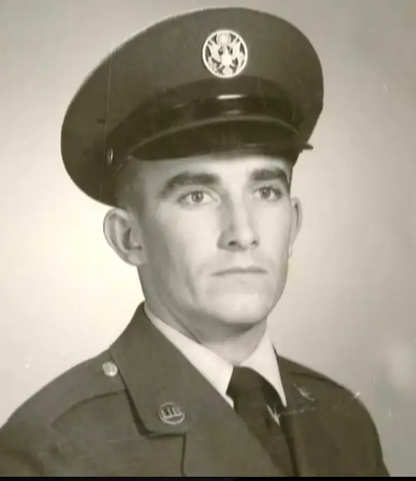
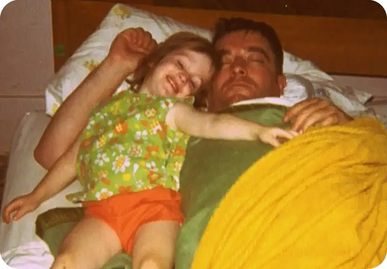

On Tuesday, we buried my father. As a veteran, a former serviceman of the U.S. Air Force, he went out of this world with a literal bang, receiving the customary honors comprising a flag ceremony and a three-volley rifle firing.
 |
| Robert E. Beauclair, U.S. Air Force |
{kind=link}
Dad would have appreciated this sort of farewell. Though he wasn’t much for pomp and circumstance in many settings, one of the times I recall tears slipping from Dad’s eyes was during a rendition of the “Star-Spangled Banner.” He was persistent about hanging the American flag in a post outside our home during appropriate times. Yes, you could say he was a true patriot, among other things…
 |
| Me and Daddy, circa 1973 |
{kind=link}
On Monday night, at the visitation and memorial, my sister played the “Ave Maria” on her flute, and I shared a reflection I’d written in the wee hours a couple nights prior. I wanted to share it here now:
There are things about all of us that most people who know us know, and things that fewer people know, and then there are the things about ourselves that we don’t even know — those things reserved for God alone to ponder and weigh.
It was no different with Dad. And because he would be the first to avoid sugarcoating the details, I think it’s only fair to mention right off that a few major obstacles held him back from being all that he could be.
My sister Camille and I caught on to this from an early age. When we were very young and would run to our stockings Christmas morning to see whether Santa had come for a visit, along with the treats and trinkets we‘d find from Old St. Nick, we‘d discover a few good-sized lumps of coal in Dad’s stocking. Santa obviously had caught wind of dad’s colorful language. The proof was in the coal!
Dad never did conquer letting go of some of those expletives. But it wouldn’t be fair to leave out mentioning the many beautiful words he introduced to our lives. “He’s a poet and don’t know it,“ was a favorite mantra, a belittling perhaps of what he was truly capable of when matched with pen and paper and a night of reflection. His extraordinary writing talent and storytelling abilities was and is something to greatly admire. Sadly, the vast majority of these writings were destroyed in the house fire our family experienced in 2006. And yet, many of us here had a chance to read some of his lively tales or poems. Though few reached publication, due more to his lack of pursuing that than anything else, I do remember one year when some of his work received honors through a special writing contest sponsored by the Billings Gazette. In order to increase his chances of winning, Dad stacked the entries, submitting a few under Mom’s name. What a surprise it was to all of us when she was publicly honored for her finely composed limerick! J I’ll forever treasure his handing on of his deep affinity for words, even if I’m never able to quite reach the high bar he set. And though many of them are lost forever, he’s left a legacy of well-turned phrases within my heart.
The way I see it, things seem to have balanced out in the end for Dad, swinging in favor of what I feel was the basic goodness of his essence. Because despite an edge he sometimes had to work around, Dad also had an incredibly soft spot at his core — one that had him anonymously helping a neighbor in need or showing compassion to one of the many dogs or cats I would bring home as a child, or getting down on the floor with his grandkids, making a fool of himself just to elicit a smile.
Reflecting on the part of his life I was privileged to know in these past weeks especially, it became impossible to ignore how Dad had made the right choice when it really counted. For example, there were long years when Dad didn’t attend church with us, yet he would insist that Camille and I make our way to Mass with our mother. Though this behavior often led to confusion, in time I would come to see that Dad’s urgings carried great significance. He might not have felt worthy of the Lord himself during those times, but he didn’t want his girls to miss seeking the pearl of great price. Not long after his brother Leo’s death in 2000, after 30+ years of being away from the Church, Dad summoned his best humble stance and returned to the Lord. I am so proud of him for that decision, and I told him so just a few days ago as he lay dying. After all, doesn’t God pursue the lost sheep especially, and isn‘t that the reason we’re here — to find our way back to Him? As I said goodbye to Dad early Friday morning, my heart felt no confliction over his next destination.
I want to mention, too, how he welcomed each and every announcement of a new grandchild on the way. Not all were comfortable with the size of our growing family, but I always knew that when we made the phone call to Dad to say God had blessed us again with a child, we would receive a warm reception. Something along the lines of, “Well, I‘ll be, that‘s wonderful!” And he’d make sure we knew he’d be praying for us for a safe and healthy pregnancy.
I could write a book about Dad. And maybe I will someday. Or maybe I already have. Either way, it seems appropriate to end my long-winded reflection here with something brief, though telling. This came to me by Facebook the other day from one of my mother’s former students — just one more of the kids on the reservation Dad had taken time to make smile:
“Mr. Beauclair…has always been a very loving, kind-hearted man. My fondest memory of him was when I was younger. He used to come to the school playground and play basketball with me, or we’d see who could walk the fastest. I’ll miss you Mr. Beauclair. You’re in my heart and prayers!”
Finally, for the back of the memorial program, my sister, mom and I chose the Irish Blessing, honoring my father’s Irish heritage, along with a photo we hold dear that exemplifies the man he was — one who loved sitting outside and simply contemplating life and its wonders.
May the road

To read his obit, visit here.